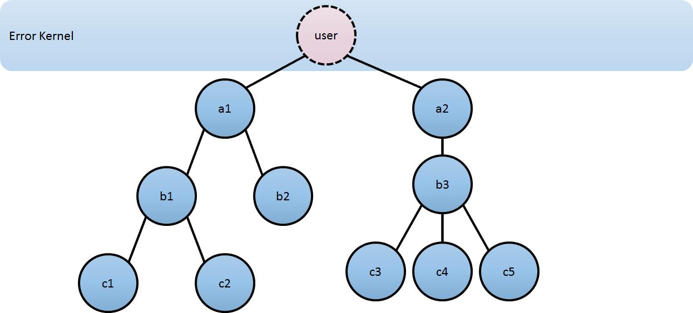

Actors are objects which encapsulate state and behavior, they communicate exclusively by exchanging messages which are placed into the recipient’s mailbox. In a sense, actors are the most stringent form of object-oriented programming, but it serves better to view them as persons: while modeling a solution with actors, envision a group of people and assign sub-tasks to them, arrange their functions into an organizational structure and think about how to escalate failure (all with the benefit of not actually dealing with people, which means that we need not concern ourselves with their emotional state or moral issues). The result can then serve as a mental scaffolding for building the software implementation.
Note
AnActorSystemis a heavyweight structure that will allocate 1...N Threads, so create one per logical application.
Hierarchical Structure
Like in an economic organization, actors naturally form hierarchies. One actor, which is to oversee a certain function in the program might want to split up its task into smaller, more manageable pieces. For this purpose it starts child actors which it supervises. While the details of supervision are explained here, we shall concentrate on the underlying concepts in this section. The only prerequisite is to know that each actor has exactly one supervisor, which is the actor that created it.
The quintessential feature of actor systems is that tasks are split up and delegated until they become small enough to be handled in one piece. In doing so, not only is the task itself clearly structured, but the resulting actors can be reasoned about in terms of which messages they should process, how they should react normally and how failure should be handled. If one actor does not have the means for dealing with a certain situation, it sends a corresponding failure message to its supervisor, asking for help. The recursive structure then allows to handle failure at the right level.

Compare this to layered software design which easily devolves into defensive programming with the aim of not leaking any failure out: if the problem is communicated to the right person, a better solution can be found than if trying to keep everything “under the carpet”.
Now, the difficulty in designing such a system is how to decide who should supervise what. There is of course no single best solution, but there are a few guidelines which might be helpful:
- If one actor manages the work another actor is doing, e.g. by passing on sub-tasks, then the manager should supervise the child. The reason is that the manager knows which kind of failures are expected and how to handle them.
- If one actor carries very important data (i.e. its state shall not be lost if avoidable), this actor should source out any possibly dangerous sub-tasks to children it supervises and handle failures of these children as appropriate. Depending on the nature of the requests, it may be best to create a new child for each request, which simplifies state management for collecting the replies. This is known as the “Error Kernel Pattern” from Erlang.
- If one actor depends on another actor for carrying out its duty, it should watch that other actor’s liveness and act upon receiving a termination notice. This is different from supervision, as the watching party has no influence on the supervisor strategy, and it should be noted that a functional dependency alone is not a criterion for deciding where to place a certain child actor in the hierarchy. There are of course always exceptions to these rules, but no matter whether you follow the rules or break them, you should always have a reason.
Configuration Container
The actor system as a collaborating ensemble of actors is the natural unit for managing shared facilities like scheduling services, configuration, logging, etc. Several actor systems with different configuration may co-exist within the same JVM without problems, there is no global shared state within Akka itself. Couple this with the transparent communication between actor systems—within one node or across a network connection—to see that actor systems themselves can be used as building blocks in a functional hierarchy.
Actor Best Practices
- Actors should be like nice co-workers: do their job efficiently without bothering everyone else needlessly and avoid hogging resources. Translated to programming this means to process events and generate responses (or more requests) in an event-driven manner. Actors should not block (i.e. passively wait while occupying a Thread) on some external entity—which might be a lock, a network socket, etc.—unless it is unavoidable; in the latter case see below.
- Do not pass mutable objects between actors. In order to ensure that, prefer immutable messages. If the encapsulation of actors is broken by exposing their mutable state to the outside, you are back in normal .NET concurrency land with all the drawbacks.
- Actors are made to be containers for behavior and state, embracing this means to not routinely send behavior within messages (which may be tempting using Scala closures). One of the risks is to accidentally share mutable state between actors, and this violation of the actor model unfortunately breaks all the properties which make programming in actors such a nice experience.
- Top-level actors are the innermost part of your Error Kernel, so create them sparingly and prefer truly hierarchical systems. This has benefits with respect to fault-handling (both considering the granularity of configuration and the performance) and it also reduces the strain on the guardian actor, which is a single point of contention if over-used.
Blocking Needs Careful Management
In some cases it is unavoidable to do blocking operations, i.e. to put a thread to sleep for an indeterminate time, waiting for an external event to occur. Examples are legacy RDBMS drivers or messaging APIs, and the underlying reason is typically that (network) I/O occurs under the covers. When facing this, you may be tempted to just wrap the blocking call inside a Future and work with that instead, but this strategy is too simple: you are quite likely to find bottlenecks or run out of memory or threads when the application runs under increased load.
The non-exhaustive list of adequate solutions to the “blocking problem” includes the following suggestions:
- Do the blocking call within an actor (or a set of actors managed by a router), making sure to configure a thread pool which is either dedicated for this purpose or sufficiently sized.
- Do the blocking call within a Future, ensuring an upper bound on the number of such calls at any point in time (submitting an unbounded number of tasks of this nature will exhaust your memory or thread limits).
- Do the blocking call within a Future, providing a thread pool with an upper limit on the number of threads which is appropriate for the hardware on which the application runs.
- Dedicate a single thread to manage a set of blocking resources (e.g. a NIO selector driving multiple channels) and dispatch events as they occur as actor messages.
The first possibility is especially well-suited for resources which are single-threaded in nature, like database handles which traditionally can only execute one outstanding query at a time and use internal synchronization to ensure this. A common pattern is to create a router for N actors, each of which wraps a single DB connection and handles queries as sent to the router. The number N must then be tuned for maximum throughput, which will vary depending on which DBMS is deployed on what hardware.
Note
Configuring thread pools is a task best delegated to Akka, simply configure in the application.conf and instantiate through an ActorSystem.
What you should not concern yourself with
An actor system manages the resources it is configured to use in order to run the actors which it contains. There may be millions of actors within one such system, after all the mantra is to view them as abundant and they weigh in at an overhead of only roughly 300 bytes per instance. Naturally, the exact order in which messages are processed in large systems is not controllable by the application author, but this is also not intended. Take a step back and relax while Akka does the heavy lifting under the hood.
comments powered by Disqus